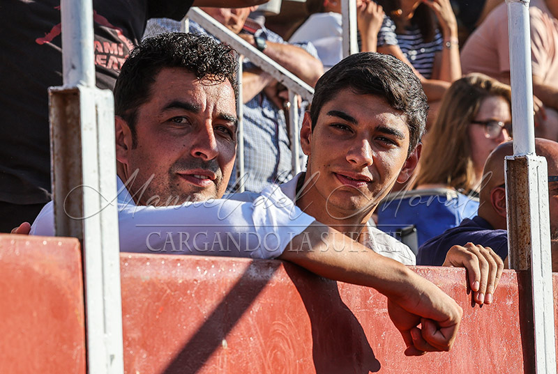

El novillero Aparicio Romero y el empresario ciudadrealeño Andrés Masías han alcanzado un acuerdo de apoderamiento con el objetivo de impulsar una nueva etapa en la trayectoria del joven torero de Arenas de San Juan. El acuerdo nace desde la confianza mutua y la ilusión compartida por seguir construyendo un proyecto de futuro.
Andrés Masías ha definido este nuevo camino como un proyecto ilusionante, apostando por el talento, la formación continua y el desarrollo del novillero, con la mirada puesta en los compromisos que restan de temporada y en un año 2026 que se presenta decisivo para su carrera.
Durante las últimas temporadas, Aparicio Romero ha logrado consolidar una trayectoria ascendente. Entre sus actuaciones más destacadas figuran su debut en Francia, su presencia durante tres años consecutivos en la final del certamen «Promesas de Nuestra Tierra», su participación en el prestigioso «Alfarero de Plata» de Villaseca de la Sagra y sus destacados resultados en ferias como Ciudad Real o Soria.
El objetivo principal de esta nueva etapa será preparar el debut como novillero con picadores y continuar favoreciendo el crecimiento profesional y artístico del torero. Aparicio Romero también ha querido agradecer públicamente el trabajo y el aprendizaje recibido de sus anteriores mentores y directores artísticos, iniciando este nuevo proyecto con ilusión y compromiso.
← Volver a noticias